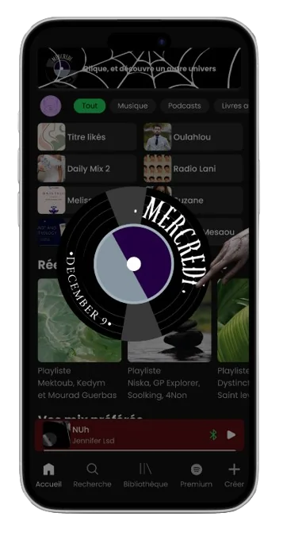
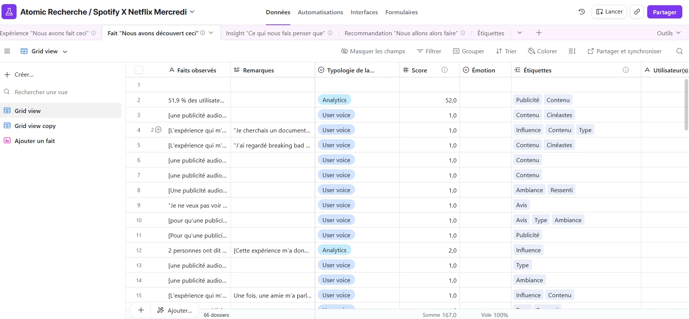
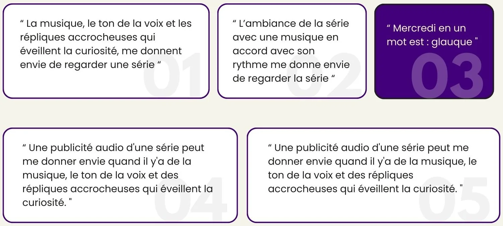
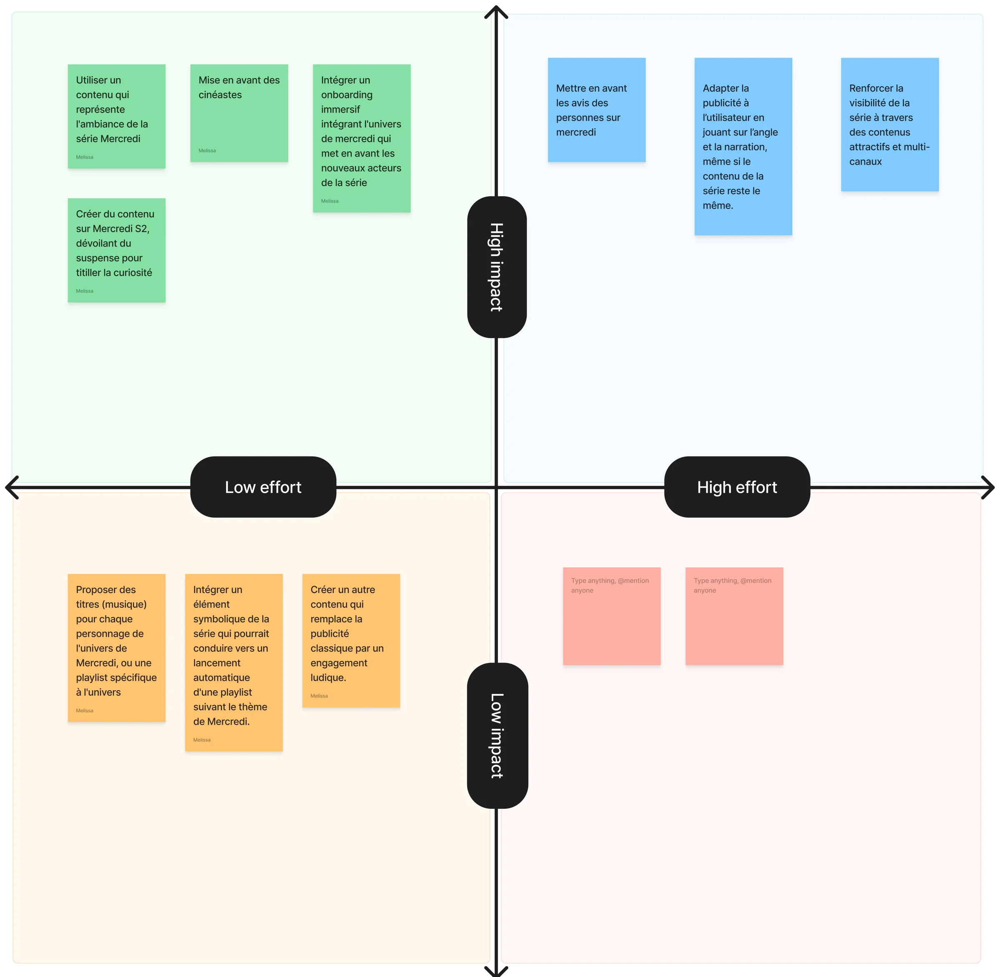
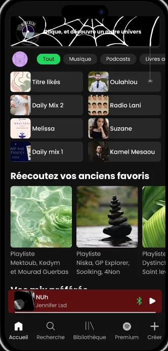
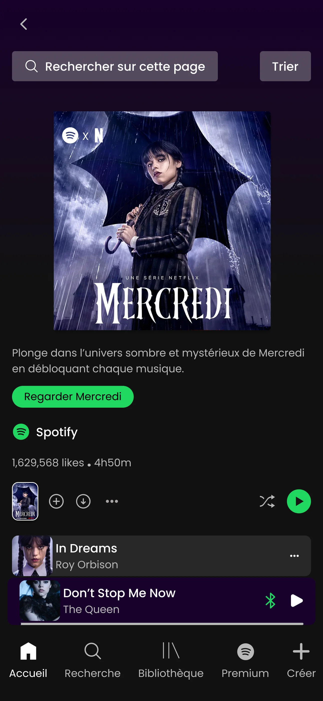
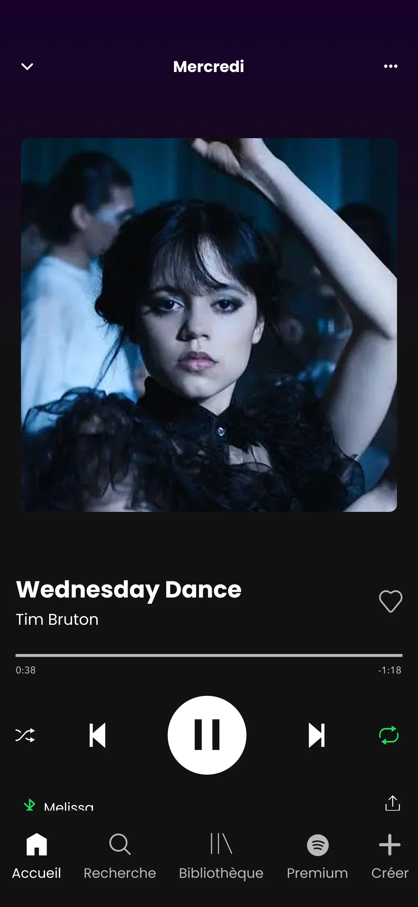

NETFLIX & SPOTIFY
Concevoir une expérience musicale immersive inspirée de Mercredi

Contexte
À l’occasion du lancement de la nouvelle saison de Mercredi, Netflix s’associe à Spotify pour imaginer une expérience musicale immersive intégrée à l’application Spotify.
Problématique
Comment transformer un moment d’écoute sur Spotify en une expérience immersive et narrative qui reflète l’univers gothique de Mercredi et suscite l’envie de découvrir la série ?
Mission
Concevoir une expérience immersive sur Spotify pour accompagner la sortie de la nouvelle saison de Mercredi et prolonger l’univers de la série au-delà de l’écran.
Outils
Airtable
Figma
Figjam
Google Docs
Équipe
Toute seule
Mon rôle
UX/UI designer
UX Researcher
Date limite
30 jours
Recherche
L’objectif de cette recherche était de comprendre ce qui déclenche l’envie de regarder une série et comment une publicité audio immersive pourrait influencer cette décision.
Pour cela, j’ai mené une guérilla , afin de recueillir des réactions spontanées et authentiques.
Guérilla
Format : entretiens (2–3 minutes) à république
Cible : utilisateurs de 18 à 40 ans
Nombre d’entretiens : 15 participants
Objectif : identifier les leviers émotionnels et contextuels qui influencent le choix de commencer une série
Thématiques explortées :
👉 Les questions de la Guérilla
Les éléments qui donnent envie de regarder une série
Les souvenirs marquants liés à la promotion d’une série
La perception et l’impact potentiel d’une publicité audio immersive
Atomic Research Repository
Toutes les données issues des guérillas ont été centralisées dans un Atomic Research Repository (Airtable) afin de structurer l’analyse et relier la recherche aux décisions de conception.
Organisation du repository :
Expérience
Fait
Insight
Recommandation
Étiquettes
Cette structure permet de transformer les observations terrain en recommandations de design claires et exploitables.

Extrait du repository utilisé pour structurer la recherche
📊Insights clés
Susciter la curiosité
45 % des participants indiquent que le suspense et la curiosité suscitent leur envie de commencer une série.
Influence sociale
52% des interviewés se laissent influencer par les recommandations sociales
Immersion
41 % des participants déclarent que ressentir l’ambiance et l’univers de la série les motive davantage à regarder.

Priorisation des opportunités
Une matrice Effort / Impact a été utilisée pour prioriser ces recommandations et définir les directions de conception les plus stratégiques.

✨ Job To Be Done
👉 Voir tous les Job To Be Done
Les recommandations à fort impact et faible effort ont été transformées en Jobs To Be Done pour refléter des besoins utilisateurs concrets.
Et celle sur laquelle j'ai travaillé est "Quand je navigue sur Spotify et découvre du contenu lié à une série, je veux ressentir l’univers et l’ambiance de Mercredi, pour savoir si la série correspond à mes goûts et me donner envie de la regarder."
Approche de conception
1. Concevoir pour l’émotion et l’immersion
L’interface a été pensée pour faire ressentir immédiatement l’univers de la série, en travaillant l’ambiance visuelle, les contrastes, la narration et l’atmosphère globale.
2. Susciter la curiosité sans tout révéler
Les contenus et éléments visuels ont été structurés pour intriguer l’utilisateur, créer du mystère et donner envie d’en découvrir plus, sans dévoiler toute l’histoire.
3. Renforcer la projection dans l’expérience
Le design vise à aider l’utilisateur à s’imaginer en train de regarder la série, en mettant en avant les émotions, le ton et les codes de l’univers plutôt qu’un simple résumé informatif.
La solution
Pour ce projet Spotify ×Netflix j'ai utilisé Jitter et Lottie Lab pour créer des animations qui amplifient l'ambiance gothique de la série et rendent chaque interaction narrative.



🚀 Ce que j'ai appris :
L'importance d'une intro claire et rassurante : annoncer l'anonymat dès le départ met les participants à l'aise et favorise des réponses authentiques.
● La fluidité vient de la préparation : mémoriser les questions permet de créer une conversation naturelle plutôt qu'un interrogatoire.
● Les relances enrichissent les insights : creuser les réponses courtes révèle souvent les informations les plus précieuses.
● L'approche compte autant que les questions : savoir observer le contexte social (groupes en discussion) évite de briser la dynamique et respecte les participants.
● La diversité des profils enrichit la recherche : interroger un panel varié sans biais d'apparence apporte des perspectives plus complètes et représentatives.